2002
| 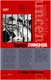 | Эдуард Лимонов В плену у мертвецов жzл 11.11.2002 |
2003
 |
Уильям Берроуз Города красной ночи overdrive 20.03.2003 |
| 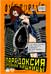 | Лидия Ланч Парадоксия: Дневник хищницы overdrive 20.03.2003 |
 |
Лестер Гринспун, Джеймс Бакалар Марихуана — запретное лекарство non-fiction 09.04.2003 |
 |
Эдуард Лимонов Другая Россия вне серий 18.04.2003 |
 |
Адам Парфрей (сост.) Аллах не любит Америку non-fiction 25.04.2003 |
| 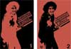 | Алексей Цветков (сост.) Антология современного анархизма и левого радикализма вне серий 14.05.2003 |
 |
Борис Кагарлицкий Восстание среднего класса non-fiction 30.06.2003 |
 |
Дуглас Рашкофф Медиавирус non-fiction 25.07.2003 |
 |
Дмитрий Нестеров Скины: Русь пробуждается overdrive 31.07.2003 |
| 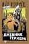 | Эндрю Макдональд Дневник Тернера overdrive 31.07.2003 |
 |
Хьюи Ньютон Революционное самоубийство жzл 31.07.2003 |
 |
Алла Дудаева Миллион первый жzл 11.08.2003 |
 |
Брет Истон Эллис Американский психопат overdrive 18.08.2003 |
 |
Олег Шишкин Красный Франкенштейн non-fiction 11.09.2003 |
| 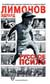 | Эдуард Лимонов Русское психо вне серий 11.09.2003 |
 |
Эдуард Лимонов Контрольный выстрел вне серий 11.09.2003 |
| 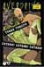 | Тони Уайт Трави трассу. Сатана! Сатана! Сатана! overdrive 22.09.2003 |
| 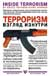 | Брюс Хоффман Терроризм изнутри non-fiction 20.11.2003 |
 |
Эдуард Лимонов Стихотворения поэзия 20.11.2003 |
 |
Гейдар Джемаль Революция пророков non-fiction 20.11.2003 |
 |
Юлия Юзик Невесты Аллаха non-fiction 25.11.2003 |
 |
Алексей Цветков Суперприсутствие non-fiction 25.11.2003 |
| 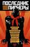 | Последние пионеры (под ред. Алексея Рафиева вне серий 25.11.2003 |
 |
Саша и Энн Шульгины Фенэтиламины, которые я знал и любил жzл 23.12.2003 |
| 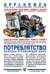 | Джон де Грааф Потреблятство non-fiction 28.12.2003 |
2004
| 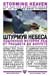 | Джей Стивенс Штурмуя небеса non-fiction 05.01.2004 |
 |
Всеволод Емелин Стихотворения поэзия 06.01.2004 |
 |
Виржини Депант Трахни меня overdrive 22.01.2004 |
 |
Глен Йеффет Съешь красную таблетку cybertime 26.01.2004 |
| 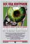 | Симсон Гарфинкель Все под контролем cybertime 30.01.2004 |
| 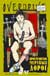 | Уильям Берроуз Пространство мертвых дорог overdrive 04.02.2004 |
| 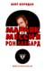 | Бент Коридан Маньяк или мессия Рон Хаббард non-fiction 16.02.2004 |
| 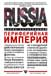 | Борис Кагарлицкий Периферийная империя non-fiction 03.03.2004 |
 |
Абель Поссе Путешествие в Агарту overdrive 19.03.2004 |
 |
Бланш Бартон Антон ЛаВей: Тайная жизнь сатаниста жzл 25.03.2004 |
| 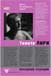 | Роберт Форте (сост.) Тимоти Лири: Искушение будущим жzл 30.03.2004 |
| 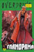 | Брет Истон Эллис Гламорама overdrive 15.04.2004 |
| 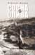 | Исраэль Шамир Сосна и олива non-fiction 19.04.2004 |
 |
Патрик Рамбо 1968 overdrive 26.04.2004 |
| 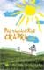 | Дмитрий Гайдук Растаманские сказки и все такое вне серий 26.05.2004 |
| 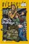 | Томас Гунциг Смерть билингвы overdrive 15.06.2004 |
| 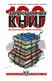 | Маргарет Балд и др. 100 запрещенных книг энциклопедии 15.06.2004 |
 |
Пьер Бордаж Евангелие от змеи overdrive 24.06.2004 |
 |
Мэтью Коллин Измененное состояние non-fiction 24.06.2004 |
| 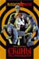 | Дмитрий Нестеров Скины: Русь пробуждается russkiy drive 26.07.2004 |
| 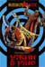 | Александр Уваров Ужин в раю russkiy drive 26.07.2004 |
 |
Конрад Беккер Словарь тактической реальности cybertime 30.08.2004 |
 |
Галина Сергеева (сост.) Антология поэзии битников поэзия 06.09.2004 |
| 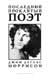 | Джим Дуглас Моррисон Последний проклятый поэт поэзия 06.09.2004 |
| 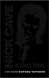 | Ник Кейв Король Чернило Том I поэзия 24.09.2004 |
 |
Мартин Бут Жизнь мага Биография Алистера Кроули жzл 13.10.2004 |
 |
Так говорил Саддам non-fiction 13.10.2004 |
| 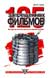 | Дон Соува 125 запрещенных фильмов энциклопедии 14.10.2004 |
| 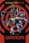 | Андрей Бычков Дипендра russkiy drive 05.11.2004 |
 |
Гейдар Джемаль Стихотворения поэзия 16.11.2004 |
 |
Мелвин Берджесс Сучка по прозвищу Леди вне серий 19.11.2004 |
 |
Алексей Тарасенко Черный крест новояз 26.11.2004 |
 |
Виктор Перельман Правдивая история китайцев новояз 26.11.2004 |
 |
Юрий Барков Запретный дневник russkiy drive 27.11.2004 |
 |
Вадим Штепа RUтопия non-fiction 27.11.2004 |
| 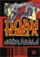 | Андрей Бодров План побега новояз 28.11.2004 |
 |
Андрей Матвеев Летучий голландец russkiy drive 29.11.2004 |
| Муслим Дмитрий Ахтямов Исламский прорыв russkiy drive 30.11.2004 | |
 |
Герд Кёнен Веспер, Энслин, Баадер. Немецкий терроризм: начало спектакля жzл 10.12.2004 |
| 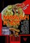 | Александр Уваров Михалыч и черт новояз 27.12.2004 |
2005
| 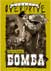 | Фрэнк Харрис Бомба overdrive 10.01.2005 |
| 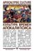 | Адам Парфрей (сост.) Культура времен апокалипсиса non-fiction 27.01.2005 |
| Алина Витухновская Черная икона русской поэзии поэзия 02.02.2005 | |
| 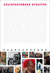 | Дмитрий Десятерик (сост.) Энциклопедия альтернативной культуры энциклопедии 23.02.2005 |
 |
Брюс Стерлинг Будущее уже началось cybertime 07.03.2005 |
 |
Мелвин Берджесс Дурь вне серий 07.03.2005 |
 |
Н. Маширо Черная медицина энциклопедии 08.03.2005 |
 |
Дмитрий Старостин Американский ГУЛАГ non-fiction 09.03.2005 |
 |
Пьер Бордаж Ангел бездны overdrive 27.03.2005 |
| 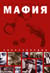 | Энциклопедия мафии энциклопедии 11.04.2005 |
 |
Поколение «Лимонки» вне серий 22.04.2005 |
| 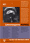 | Субкоманданте Маркос Четвертая Мировая война жzл 06.05.2005 |
 |
Ник Кейв Король Чернило Том II поэзия 13.05.2005 |
| 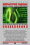 | Сьюлетт Дрейфус Компьютерное подполье cybertime 21.05.2005 |
| 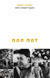 | Дэвид Чэндлер Брат номер один Биография Пол Пота жzл 14.06.2005 |
| 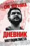 | Эрнесто Че Гевара Дневник мотоциклиста вне серий 12.08.2005 |
| 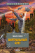 | Уильям Гибсон Виртуальный свет brave new world 01.08.2005 |
| 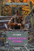 | Пэт Кадиган Чай из пустой чашки brave new world 01.08.2005 |
| 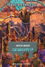 | Карлтон Меллик Сатанбургер brave new world 01.08.2005 |
 |
Джон Шерли И пришел город brave new world 01.08.2005 |
| 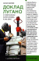 | Сьюзан Джордж Доклад Лугано klassenkampf 01.08.2005 |
 |
Джин Шарп, Брюс Дженкинс От диктатуры к демократии. Антипутч klassenkampf 01.08.2005 |
 |
Андрей Родионов Портрет с натуры поэзия 10.10.2005 |
 |
Михаил Уржаков Дом, который построил Майк russkiy drive 09.09.2005 |
 |
Александр Проханов Политолог вне серий 12.10.2005 |
 |
Александр Проханов Хроники пикирующего времени вне серий 14.10.2005 |
 |
Питер Ладлоу (сост.) Криптоанархия, кибергосударства и пиратские утопии cybertime 05.11.2005 |
| 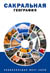 | Александр Громов (сост.) Сакральная география энциклопедии 17.11.2005 |
 |
Александр Тарасов Революция не всерьез klassenkampf 14.12.2005 |
| 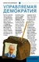 | Борис Кагарлицкий Управляемая демократия klassenkampf 26.12.2005 |
2006–2007
 |
Герман Садулаев Я - чеченец вне серий 18.03.2006 |
| 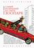 | Томас Гунциг Самый маленький на свете зоопарк ultra.fiction |
 |
Олег Киреев Поваренная книга медиа-активиста non-fiction |
| 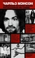 | Нуэль Эммонс Чарльз Мэнсон: подлинная история жизни, рассказанная им самим жzл |
 |
Алексей Цветков Баррикады в моей жизни вне серий |
| 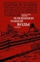 | Александр Уваров Пленники темной воды вне серий |
| 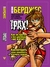 | Мелвин Берджес Трах! вне серий |
| 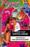 | Александр Проханов Теплоход «Иосиф Бродский» вне серий |
 |
Станислав Белковский, Владимир Голышев Бизнес Владимира Путина вне серий |
| 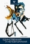 | Гилад Ацмон Единственная и неповторимая ultra.fiction |
| 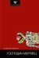 | Бенджамин Вайсман Господин мертвец ultra.fiction |
 |
Говард Маркс Господин Ганджубас вне серий |
 |
Хьюберт Селби Мл. Реквием по мечте ultra.fiction |
‡ 2007… книги, вышедшие post mortem
| Кристиан Рэч. Растения любви | |
| Питер Найт. Культура заговора | |
| Дж. Лассика. Даркнет | |
| Джеффри Томас. Панктаун | |
| Марк Дери. Скорость убегания | |
| Саймон Логан. i-o | |
| Эрик Дэвис. Техногнозис | |
| Степан Чэпмен. Тройка | |
| Мартин Говард. Мы знаем, что вам нужно | |
| Эрнст Ханфштангль. Мой друг Адольф, мой враг Гитлер | |
| Томас Сас. Фабрика безумия |
✘ Книги, которые так и не были опубликованы
- Пэт Кадиган Искусники
- Дмитрий Гайдук. Энциклопедия марихуаны
- Уолден Белло. Деглобализация
- Дмитрий Гайдук. Наркотики в мировой литературе
- Мелвин Берджес. Кровавый потоп
- Владимир Ильин (сост.). Антикопирайт
- Кристиан Рэч. Растения богов
- Пол Тодд, Джонатан Блох. Глобальная разведка
- Карлос (Шакал). Революционный ислам
- Герберт Маркузе. Контрреволюция и революция
- Правый марш
- Ренат Беккин. Ислам от монаха Багиры
- Томислав Сунич. Против демократии и равенства: Европейские новые правые